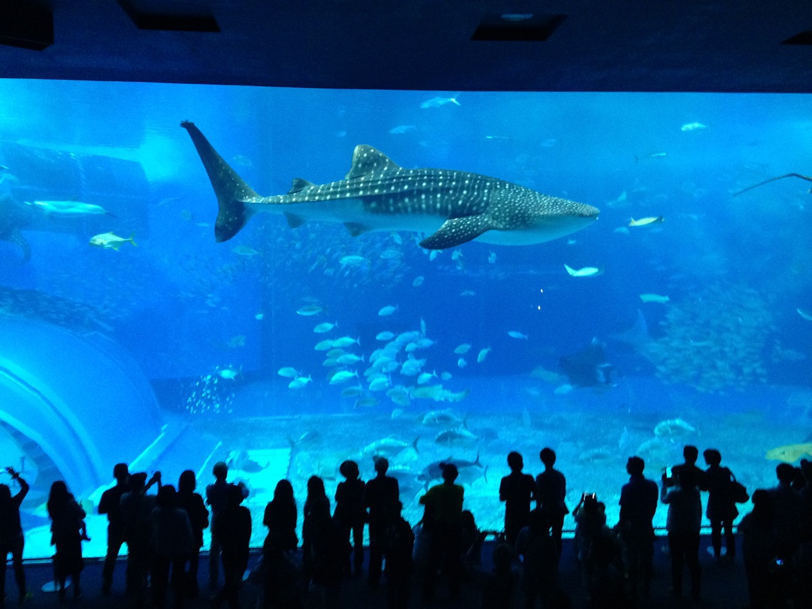

DAY 02
美麗海水族館
留一整天給鯨鯊與海洋博公園。

OKINAWA · AUTUMN 2026
五天四夜，把步調交給沖繩。
從黑潮之海，到城牆與北谷海岸。
可依類別篩選，或使用每日快速跳轉。
依提供的航班：15:50 高雄起飛、18:30 抵達那霸。航班時間均為當地時間。
預估 19:20–19:40 完成入境與領行李，再搭 Yui Rail：那霸空港站 → 旭橋站，步行至飯店。
四晚住同一間飯店；第一晚不安排正式景點。抵達時間視入境與交通狀況調整。
在旭橋／那霸巴士總站附近用餐，買水、早餐、飲料與零食，早點休息。
飯店或便利商店簡單吃，今天是整趟最早起的一天。
飯店步行至那霸巴士總站，搭往本部／海洋博公園方向巴士。此為預留時段，路線、上車站、預約方式與實際班次待確認。
預估 09:30–10:00 抵達。珊瑚之海 → 熱帶魚之海 → 黑潮之海與鯨鯊 → 深海區；黑潮之海多留時間。不加古宇利島、萬座毛或一日團。
直接在園區吃飯，不為名店離開園區。
依當日開放與活動場次安排。若想再進水族館，先確認當日再入館規定並保留票券。
天氣好就散步、拍照、休息；依回程班次縮短或調整。
以確認後的回程班次為準，不等水族館關門才找車。預估 19:00–20:00 回到旭橋。
回到那霸後就近吃晚餐、休息。
步行至旭橋站，搭 Yui Rail 至首里站，再步行或轉乘前往首里城。
預留 2–2.5 小時。依提供資料，復原正殿內部預計 2026/11/23 開放，本次不安排入內；開放日期與可參觀區域仍待官方確認。
由首里搭 Yui Rail 至牧志，再進入國際通區域吃午餐。
牧志站 → 國際通東段 → 第一牧志公設市場 → 市場本通 → 平和通商店街 → 回國際通，沿路往縣廳前方向逛。各店營業時間不同。
直接在國際通用餐，吃完繼續逛。
下午到晚上保留約 7–8 小時，一路由東往西、朝飯店方向移動。
整理戰利品，隔天 08:00 早餐、09:15 出發前往北谷。
在 Hotel Torifito 吃早餐；若想變裝，先在飯店完成基本造型或帶簡單配件，避免在公共區域換裝。
09:15 飯店出發，步行至旭橋／那霸巴士總站周邊，查 Google Maps 或沖繩巴士 NAVITIME 選當日往 Araha Beach 的路線。10:15 為預估抵達時間。
Araha Park → 海濱步道 → 海灘拍照、休息，約 1.5 小時，不必走完整座海灘。下雨就取消，改約 11:00–12:00 提早進美國村。
以 Poke、夏威夷料理或 Cafe 為優先；想吃沖繩特色可選沖繩麵。午餐吃輕一點，留胃口給下午與提早的晚餐。
預留 45 分鐘移動，不趕時間；抵達美國村後不再增加其他景點。依體力與當日交通選擇移動方式。
先逛內側的服飾、雜貨與紀念品，再往海側移動；約 15:00–15:30 進 Depot Island，途中可短暫喝咖啡休息。
Depot Island Seaside → 海濱步道 → Sunset Beach。完整留給海岸散步與拍照，不安排用餐或購物；依天氣調整。
約 17:30–17:45 入店，目標 18:45 左右吃完並上廁所，避開晚間人潮。19:00 後專心逛 Halloween。
Depot Island → American Depot → Depot Central → 海側 → 主要街區。看變裝、拍照、欣賞夜景與店家活動；2026 官方店家活動表與 Trick-or-Treat 時段待確認，不預設固定表演或煙火。
依本次提供的北谷町公告資訊，10/31 20:00 至 11/1 凌晨實施交通管制，傍晚可能壅塞。公告原始連結尚待核對；公車與計程車皆可能延誤，需提前規劃上車點。
21:15 往車站走，約 21:30 開始離開，不代表已確認有該時段班次。Plan A：確認後的公車（20／28／29 等候選路線，須核對方向、站點與末班）。Plan B：計程車回飯店，預先確認預約與管制外上車位置；四人同行可評估分攤，車程與候車仍受壅塞影響。
預估返回時間，視候車與交通狀況調整。洗澡、整理照片與行李，隔天接豐崎＋AEON 與 19:30 回程航班。
確認戰利品重量，完成打包。
方案 A：先寄放飯店，購物後回旭橋拿行李。方案 B：確認 iias 置物櫃尺寸與可用性後，帶行李去寄物，再直達機場。
前往 iias 沖繩豐崎／AEON STYLE 豐崎。實際路線與班次待確認；機場出發的車程不能直接套用旭橋出發。
直接在商場內用餐。
服飾、生活用品、雜貨與伴手禮。不安排 DMM 水族館。
與 iias 同址，補日本零食、泡麵、飲料、調味料、日用品與沖繩伴手禮。若需折返飯店拿行李，依班次提早結束。
飯店寄物：豐崎 → 旭橋 → 飯店拿行李 → 那霸機場；商場寄物：取行李後直達機場。以 17:00–17:30 到機場為目標倒推，必要時提前離開。
辦理報到、托運、安檢與出境，保留約兩小時；完成手續後再做最後採買。
依提供的航班：19:30 那霸起飛，20:25 抵達高雄（當地時間）。
依你提供的行程整理，尚未另行查證即時資訊。美麗海 08:30–18:30（17:30 最後入館）、iias 商場 10:00–21:00、AEON STYLE 09:00–22:00 均為原稿參考時間，實際以出發時公告為準。巴士時段不是已確認預訂；10/31 交通管制資訊依提供內容記錄，待核對公告。